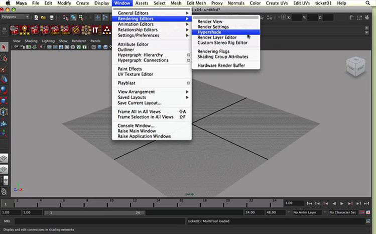
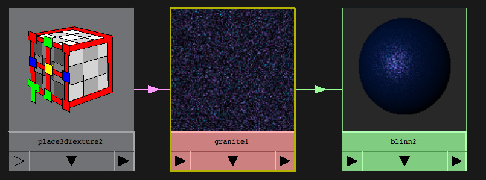
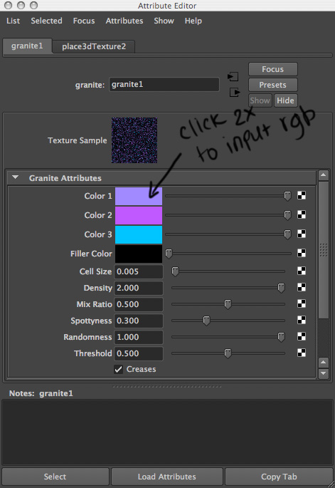
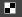

You are here: Home → Advanced Shading
Advanced Shading
In this lab, we are going to learn how to shade a car. Car is an interesting object to shade because it is made from different materials. We will use bump mapping for tires, metal shader for the shell, and transparent glass for the windows. We will also UV map the license plate - so let's get started!
We will be using hypershade so make sure to enable middle-mouse click!
Download the car model.
Creating a metal shader
First we are going to shade the shell of the car. We are going to be using hypershade, which allows us to connect rendering nodes such as materials, textures, lights, etc.
Open Hypershade (Window-> Rendering Editors -> Hypershade).  On the leftmost column, you see the list of all types of shaders. Select "Maya". In the next column, click on "granite". This should create a granite node in your hypershade work area. Also click on "blinn", which will create blinn node in your work area.
Middle mouse click and drag from the granite node to the blinn node. Select "default" from drop down menu. This will connect granite to the "color" field in blinn.  Now, double click the granite node in work area of hypershade. Attribute Editor will pop up. Set the colors of the granite node like so:  Color 1 0.632,0.539,1.000 Color 2 0.753,0.351,1.000 Color 3 0.000,0.773,1.000 Filler color to 0,0,0
Have the car shell selected. Right click and hold the blinn node in hypershade. Click "Assign material to selection". Now you have the car shell shaded! It's usually a very good idea to have your shaders named. Change the name of your blinn shader "Metal_car_Shader".
quick note
If you have to reopen hypershade and find that the shader network you created is not in the work area anymore, right click and hold on the shader node above your work area, select Graph Network.
Shading the Tires
Let's shade the tires using bump mapping. Bump mapping creates a textured feel by adding shadows and highlights (mathy explanation: bumpy look is created by althering the normals at each vertex but the actual geometry does not change).
Go to hypershade. Create a new blinn shader and set the color to black (0,0,0). Name the shader "tire-shader". Double click the node to go to the attribute editor. Set reflectivity to 0.05, Eccetricity to 0.375, Specular Roll Off to 0.6 to get the diffuse look (default blinn is quite shiny... we don't want that for the tires).
Let's add some bumpiness! In the attribute editor, click on the  next to the Bump Mapping attribute. "Create Render Node"" window will pop up. Here you select "Fractal". This will connect the Fractal texture map to bump mapping attribute of your shader.
Select the wheels and assign the "tire-shader" by right clicking on the shader node in hypershade and clicking on "Assign material to selection". Hmph. The tire looks smooth in your maya window. No worries - render a frame and you will see that tires look bumpy. The bumpiness isn't quite right yet though... so we right click on the tire, select "material attributes". Click the next to bump maping. This will take you to your fractal node attributes. Set the "Ratio" to 0.85.
Shading the Windows
Select all windows. Right click on them and choose "Assign New Material". Select blinn. Increase the transparency field of blinn to around (R = 0.65, G = 0.65, B= 0.65) and make the color a bluish tint by setting its rgb values to 0.703,1.000,1.000.
UV Mapping the License Plates
Download the license plate image. and place it in "sourceimages" folder in your project directory.
{kind=link}
Go to hypershade.
Click on lambert. Lambert node will pop up in your workspace. Click on File node. This will also pop up in your workspace. Middle click and drag from the file node to lambert node. Select default from the dropdown menu. Double click on the file node to go to the attribute editor. Click on the folder icon next to the "Image Name". Find the image from your "source images" folder to upload it.
Name your shader and attach to the license plate. You'll see that the license plate doesn't map quite right. With license plate geo selected, go to Window->UV Texture Editor. Click on this icon(image). Now you can scale and move the image so that it fits the source image.
Resources
Check out this awesome website called www.3drender.com I think we should do our own lighting challenge. We'll be viewing the best shaded/lighted car during the next meeting so please feel free to send us -facilitators email- images of the shaded car :)